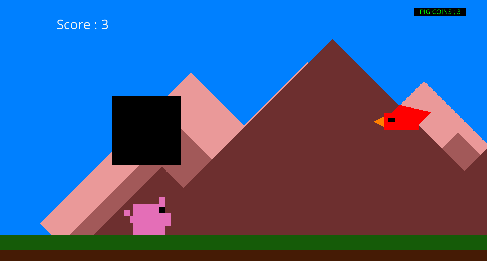
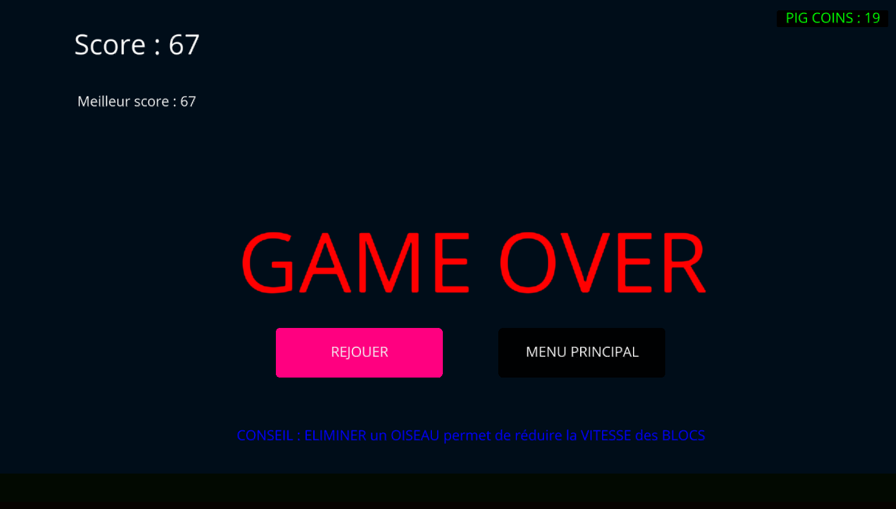
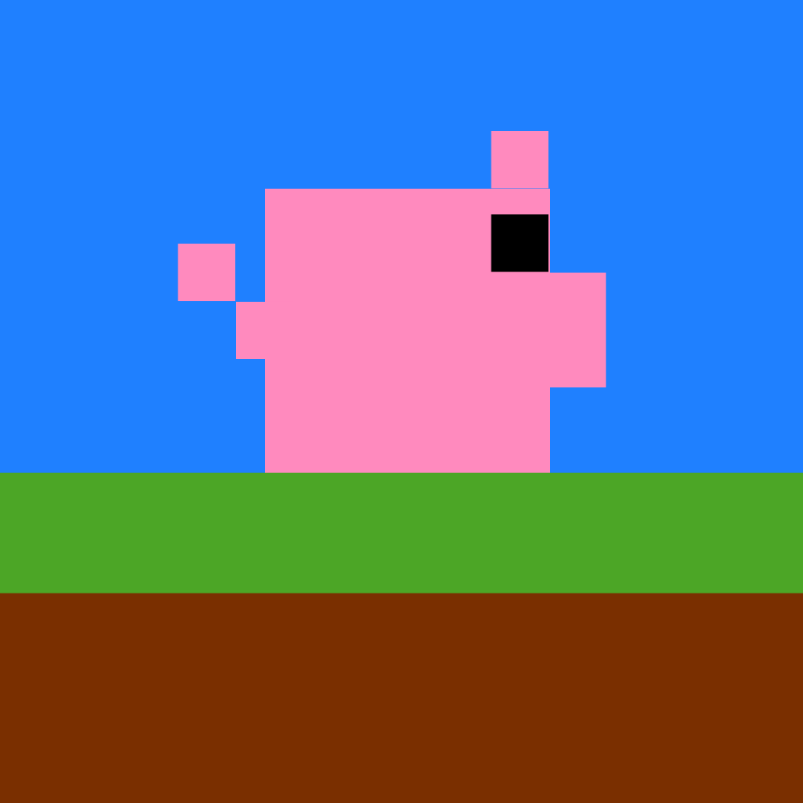

Quelques images de PIG'N RUN




Découvrez l'univers de PIG'N RUN : un jeu coloré, avec des musiques dynamiques
et qui fera travailler vos réflexes !
Version Windows - Gratuit - (Dossier à décompresser)
PIG'N RUN est un jeu de plateforme original dans lequel vous incarnez un petit cochon tout mignon !
Sautez pour éviter les obstacles, tirez des projectiles pour gagner des pièces et montrez votre collection de skins !


Le mode classique de PIG'N RUN
Sur le même clavier
Encore plus de difficulté !
(Le mien est 67 en mode normal)
Jeu développé en Python avec Ursina Engine